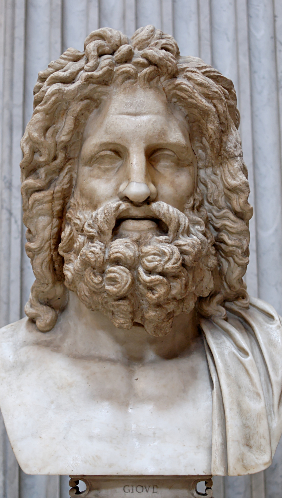
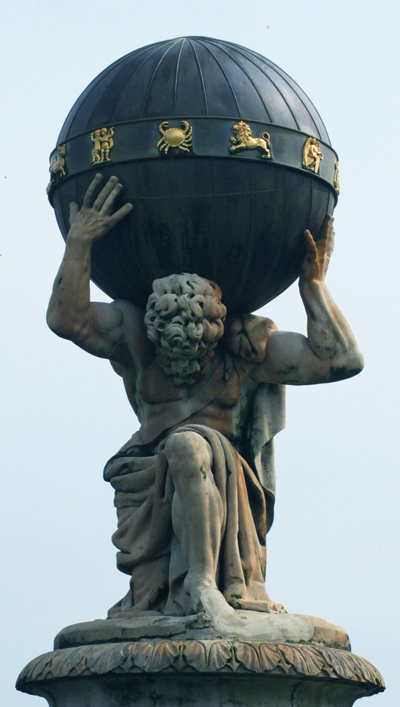
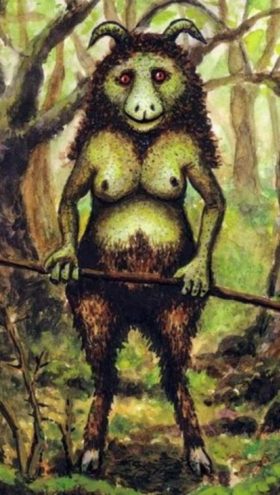

¿Qué es la Mitología?

Llamamos mitología al conjunto de mitos, relatos y narraciones de un pueblo, una cultura o una religión.
Los mitos cuentan las historias de nuestros ancestros y el origen del ser humano, del mundo, de los dioses y seres sobrenaturales, así como de los grandes héroes con poderes sobrehumanos que salvaron a los diferentes pueblos a lo largo de la historia.
También describen el origen o las caracteristicas de costumbres ancestrales o explican los fenómenos naturales, como la salida del sol, ciclo de la luna o las tormentas y volcanes.
Estos mitos han pasado de generación en generación hasta nuestros días, mezclando leyenda y tradición con el fin de explicar cuestiones sin respuesta aparente.
Mitologías del mundo
A lo largo de la historia han poblado el mundo multitud de civilizaciones diferentes y todas ellas han tenido algo en común, la necesidad de crear una mitología que explicase todo lo que no alcanzaban a entender.
Las mitologías más importantes del mundo y las más recordadas a dia de hoy son las siguientes:
- Mitología Griega
- Mitología Egipcia
- Mitología Nórdica
- Mitología Romana
- Mitología Maya
- Mitología Celta
- Mitología Japonesa
- Mitología China

Mitología de España

En España tenemos una amplia y variada mitología. Sin embargo, el paso de los años y el cristianismo tan asentado en nuestro país han contribuido a la falta de trasmisión de estos relatos y mitos y poco a poco han caido en desconocimiento.
Las zonas del país con una mitología más extensa y más conocida es el norte, desde las meigas gallegas hasta las deidades vascas pasando por los cuélebres asturianos. En cataluña también hay una gran cantidad de mitos y leyendas sobre extraordinarios seres como el terrorífico Dip.
Aun así, en todo el territorio español podemos encontrar terroríficos seres que aterrorizaban a nuestros antepasados u otros benévolos que les prestaban su ayuda cuando la precisaban.